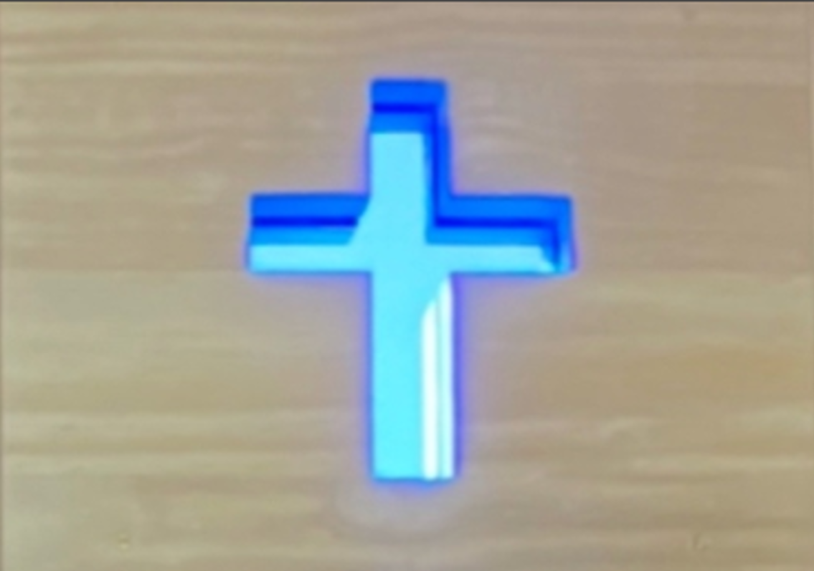
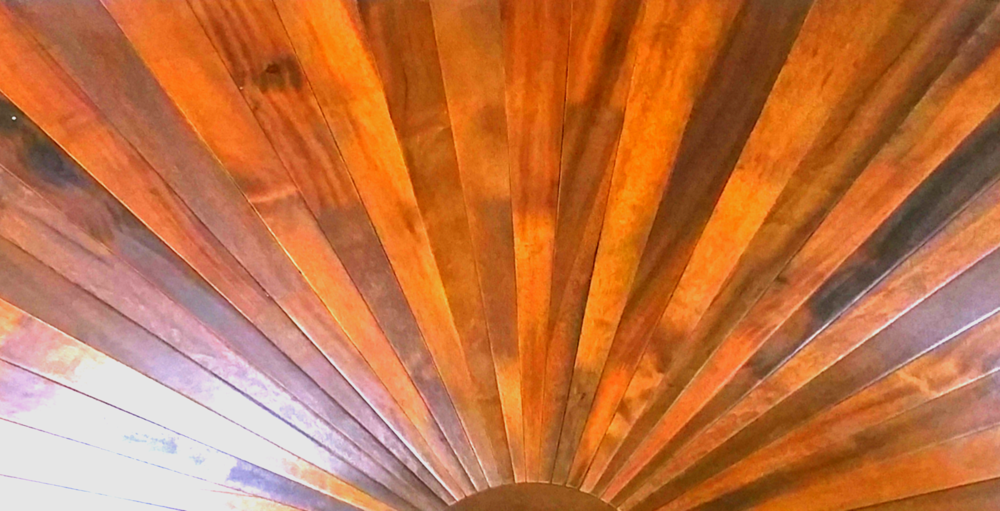
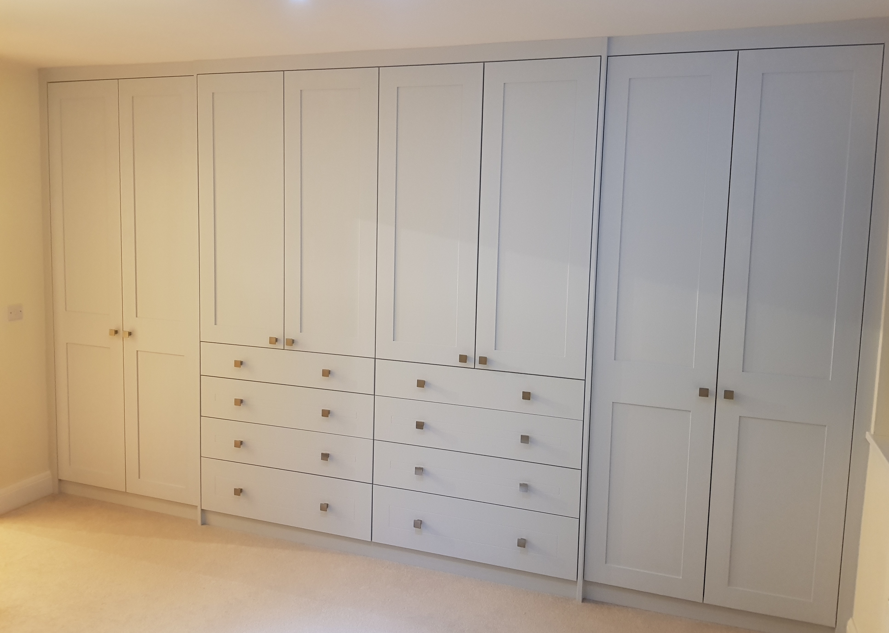

The Walnut Residence
A full walnut kitchen-diner with coffered ceiling, brass fittings, and onyx stone backsplash panels - where material and craft converge.
View Project →
The Saffron Living Room
Custom-fitted bookshelf, AV unit, and cabinetry with integrated window seat - designed to sit seamlessly alongside existing period joinery.
View Project →
Accoya Doors
Ecclesiastical entrance doors in Accoya timber with inset blue stained glass crosses - built to endure and to inspire.
View Project →
The Regent's Park Retreat
A custom-fitted sauna in a luxury residence overlooking Regent's Park - slatted benching, integrated lighting, and heat-treated timber throughout.
View Project →
The Compass Rose
Precision inlay compass-rose motifs in Ipê hardwood - artistry set into the very ground you walk on.
View Project →
The Art Deco Mantle
An Ipê hardwood mantelpiece evoking the radiating geometry of Art Deco - a focal point that commands the room.
View Project →
Fitted Furniture
Bespoke fitted furniture and custom cabinetry designed from the inside out - maximising space with clean lines and a finish that lasts.
View Project →